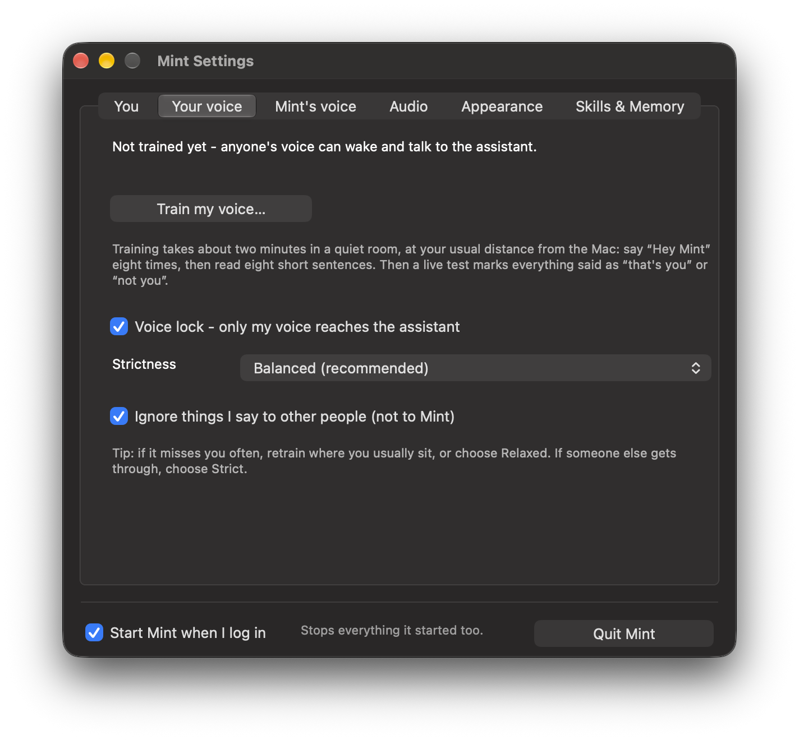

The wake word
“Hey Mint” is a small detector on your Mac. Nothing leaves the Mac while Mint is asleep; only after it wakes does your speech go to Gemini.
Rename the assistant in Settings ▸ You and it builds a new “Hey <name>” wake word in about a minute; “Hey Mint” keeps working until it is ready.
Training your voice

Menu bar ▸ Train my voice… (or the button in Settings). It takes about two minutes, once:
- Say “Hey Mint” eight times.
- Read eight sentences out loud.
- Mint builds your voiceprint and retrains “Hey Mint” on your own voice.
- A live test marks each thing you say “that's you” or “not you”.
The voice lock
- Only your “Hey Mint” wakes it. Someone else saying it is ignored.
- Only your speech reaches Gemini; anything else is replaced by silence.
- Only your voice can talk over it; another voice just turns it down while it checks.
| Strictness | When to use it |
|---|---|
| Relaxed | It sometimes misses you (a noisy room, a cold) |
| Balanced | The default |
| Strict | People with similar voices are around |
Talking to someone else
The first thing after “Hey Mint” is always for Mint. For follow-ups, Jev decides whether you were talking to Mint or to someone in the room, using what Mint last said and how loud you were. Anything on screen waits for that verdict (about a second).
| You say | Mint |
|---|---|
| “Rahul, did you finish your lunch?” | Ignores it |
| “and what's the date today?” | Answers |
Turn this off in the menu: “Ignore talk not meant for Mint”.
Words it gets wrong
Tell Mint once and it hears the word right from then on.
you heard “cube con”, I said KubeCon
no, I said on-call
it's GitHub, one word
forget the KubeCon fix
“Hey Mint” itself is cut out of what Gemini hears, so it no longer turns into words like “payment”. English and Hindi (and the two mixed) are understood; names from custom.json are given to the transcriber as vocabulary.
Calls, and saving memory
- Calls: when Zoom, Meet, Teams, FaceTime or the like uses the microphone, Mint steps aside and comes back three seconds after the call ends.
- Asleep for a while: after 20 minutes asleep and idle (Settings ▸ Appearance ▸ Free memory), Mint unloads to about 70 MB. The orb stays on screen as a picture, ⌘J still works, and “Hey Mint” brings it back in a few seconds.